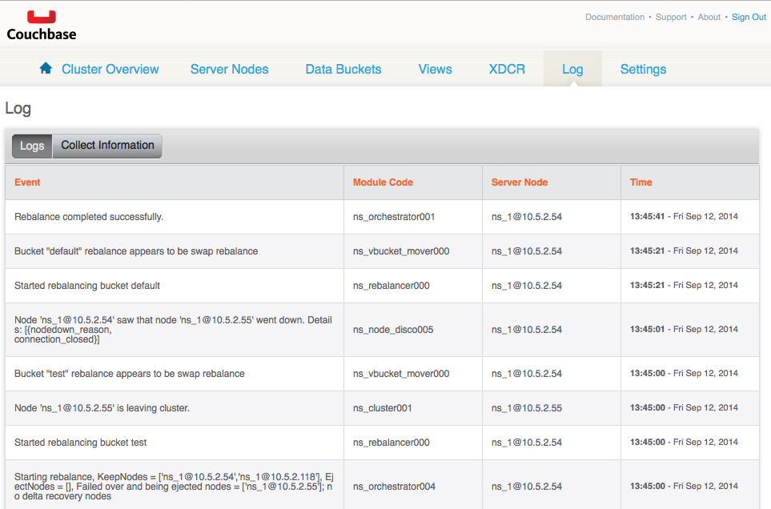
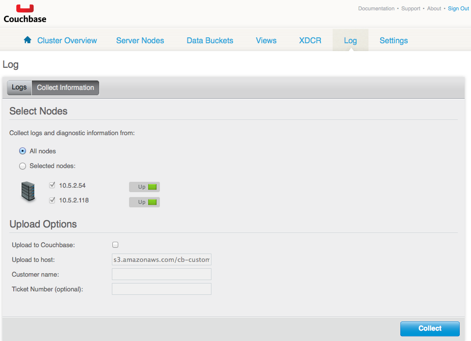

Log
The Log section provides a built-in event log and diagnostics collection section.
Log
The event log enables you to identify activity and errors within the Couchbase cluster.
Collect Information
The collection information section enables you to collect logs and diagnostic information from either all nodes or selected nodes in a cluster. In addition, upload options are provided.
